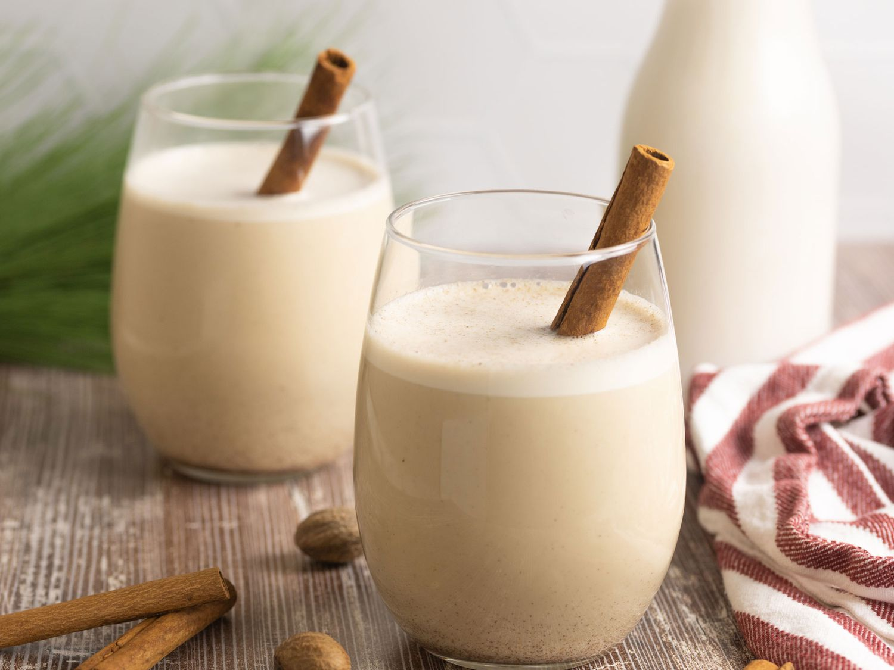

Coquito

Have the happiest holiday ever with this top-rated coquito recipe. Whether you bottle it and give it as gifts or
keep the whole batch to yourself, this boozy drink will make your season extra festive.
Coquito is a traditional holiday drink that originated in Puerto Rico. In Spanish, coquito means "little
coconut." The beverage is coconut-based and spiked with rum. Rich and creamy coquito, which is often thickened
with egg yolks, is similar to eggnog. In fact, sometimes it's referred to as "Puerto Rican eggnog."
Ingredients
- Evaporated milk: This coquito recipe starts with a can of evaporated milk.
- Eggs: Two beaten egg yolks contribute to the rich, thick, and creamy texture.
- Cream of coconut: Canned cream of coconut lends richness and gives the coquito its signature coconut
flavor.
- Sweetened condensed milk: Sweetened condensed milk makes everything more delicious, including this
coquito
recipe!
- White rum: The best rum for coquito is white Puerto Rican rum, such as Bacardi. In a pinch, any
pleasant-tasting white rum will do.
- Water: Water thins the thick and creamy mixture, making it super pourable.
- Vanilla: A teaspoon of vanilla extract takes the flavor up a notch.
- Spices: Cinnamon and cloves add warmth and coziness.
Steps
- Cook the evaporated milk and egg yolks in a double boiler until thick.
- Transfer the mixture to a blender and blend with the remaining ingredients.
- Transfer the mixture to a blender and blend with the remaining ingredients.